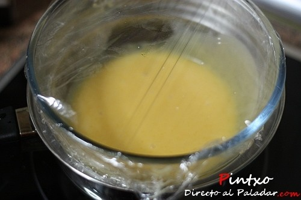
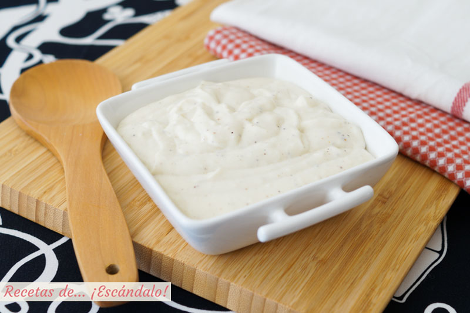
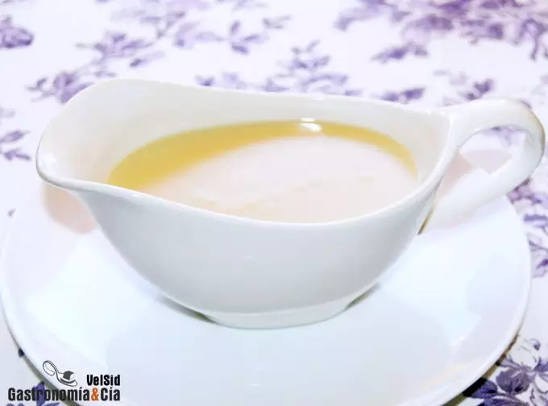
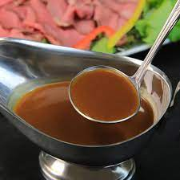

Por el momento está casi vacío.¡Ten paciencia!
Las mejores salsas para tus comidas favoritas
¿Qué hace que una salsa sea una salsa?
Básicamente, el líquido necesita ser espesado de modo que cubra y aferre la comida en vez de quedar despegado de ella. El espesamiento puede ocurrir cocinando y reduciendo cosas como la salsa de tomate, que naturalmente se espesa a medida que se evapora la humedad, pero otras salsas necesitan un poco de ayuda.
Aquí es donde entra en juego el roux. Roux es básicamente cocinar la grasa y la harina juntas antes de agregar el líquido para que mezlca crezca. La grasa usada generalmente es la mantequilla, pero el aceite u otras grasas se pueden también utilizar. La grasa y la harina se cocinan juntas hasta obtener una pasta muy oscura, con un sabor ligeramente a nuez, cuando se agrega el líquido y se lleva a ebullición, la harina espesa el líquido y se obtiene una deliciosa salsa.
Cuatro de las cinco salsas madre son engrosados por un roux, por lo que es importante saber en qué consiste y cómo se prepara.
Las cinco salsas madre
Una de las primeras cosas que aprende un estudiante de cocina es cómo preparar las cinco salsas madre, pues son la base de otras salsas y muchos platos. Estas salsas base son: bechamel, española, holandesa, de tomate y velouté, y se utilizan en todo el mundo en restaurantes, hoteles y cocinas profesionales.
Al tratarse de salsas bae, es importante conocerlas y dominarlas, sobre todo para los profesionales de la gastronomía. Cuando preparamos nuestras propias salsas, estamos controlando la calidad del plato, tanto en sabor como en ingredientes.
Salsa holandesa
Esta es la única salsa madre no engrosada por un roux. En su lugar, se espesa por una emulsión de yema de huevo y mantequilla derretida, lo que significa que es una mezcla estable de dos cosas que por lo general normalmente no se suelen mezclar, por eso es una salsa muy delicada, porque la emulsión puede romperse fácilmente.
Ingredientes: 2 yemas de huevo, 250 gr de mantequilla clarificada, 2 cucharadas de limón y sal.
Preparación: Empezamos montando las yemas, si es un bol al baño maría mejor. Añadimos el zumo de limón. Cuando hayan doblado su volumen iremos añadiendo poco a poco la mantequilla clarificada, logrando una emulsión que se acerque en consistencia a una mayonesa. Por último añadimos la sal.
Salsa Bechamel
Consiste en un roux batido con leche para obtener una salsa blanca. La cantidad de mantequilla y harina debe ser igual y la cantidad de leche depende de la consistencia que deseemos de la salsa, si la queremos más líquida bastará con agregar más leche. La nuez moscada es el condimento característico de la bechamel. Si añadimos una yema de huevo y queso rallado a una bechamel, obtendremos una salsa Mornay.
Ingredientes: 1 litro de leche entera, 60-80 gr de mantequilla, 60-80 gr de harina, sal, pimienta y nuez moscada.
Preparación: Derretimos la mantequilla, mezclamos con la harina y removemos durante un minuto a fuego medio. Después apartamos y dejamos enfriar el roux. Cuando la leche esté hirviendo la echamos en el roux poco a poco mezclando y disolviendo todos los posibles grumos. Cuando hayamos terminado volvemos a poner sobre el fuego. Dejamos cocer, removiendo de vez en cuando, unos 10 minutos. Al final añadimos la sal, la pimienta negra recién molida y la nuez moscada.
Salsa velouté
Una salsa velouté, igual que la bechamel, comienza con un sencillo roux blanco pero al que se añade caldo de pollo, pavo, pescado o tenera. La salsa resultante toma el sabor del caldo, y el nombre se deriva de la palabra francesa para el terciopelo, que acertadamente describe esta salsa suave pero ligera y delicada. Por lo general se sirve sobre pescado o aves de corral que ha sido delicadamente cocinado, como por la caza furtiva o vapor.
Ingredientes: 1/2 litro de fumet de pescado o fondo blanco, 100 ml de leche, 30 gr de mantequilla y 30 gr de harina.
Preparación: Empezaremos haciendo el roux. El roux no es más que una mezcla de harina y mantequilla ligeramente tostada. Dependiendo de la elaboración el nivel de tostado será mayor o menor. De esta forma obtenemos roux blancas, rubias u oscuras. Entendiendo las blancas como las menos cocidas y las oscuras, las más cocidas. Para la salsa velouté nos interesa tostarla lo menos posible. Dejándola rubia o incluso blanca, casi sin coción. A continuación vamos añadiendo nuestro caldo. En este caso es un fumet de pescado, iremos echando poco a poco el caldo, como si hiciésemos una bechamel. Aunque a nosotros nos interesa hacer la velouté mucho más líquida. Queremos una salsa espesa, no tanto como una bechamel. Pero en otras ocasiones, a lo mejor, podemos hacer una velouté mucho más espesa. Dejamos cocer unos 10 al final, añadiendo si fuese necesario algo más de caldo al final.
Salsa Española
La salsa española (también conocida como salsa Brown) comienza con una combinación de zanahorias, apio y cebolla que se revuelve en una sartén. Se combina con un roux, caldo de carne, pasta de tomate, ajo, tomate fresco, un bouquet garni y especias y se cocina por lo menos 3 horas. Algunos puristas añaden manteca de cerdo con zanahorias y cebolla. Es una salsa muy pesada y rica que combina bien con carne asada y champiñones.
Ingredientes: 40 gr de harina, 40 gr de mantequilla o aceite de oliva y 3/4 de litro de fondo oscuro. Para enriquecer la salsa española y darle un toque fresco podemos utilizar una cebolla, una zanahoria, un puerro y una rama de apio.
Preparación: En una cazuela derretimos la mantequilla y tostamos la harina hasta que torne oscura. En el caso de que queramos meter los ingredientes opcionales derretimos la mantequilla y pochamos las verduras. Después añadimos la harina y dejamos que tome color. Por último añadimos el fondo oscuro y dejamos cocer hasta que ligue y empiece a espesar. Pasamos por el chino y servimos nuestra salsa con el plato que hayamos elegido.
Salsa de tomate
Una salsa de tomate clásica combina cebollas, ajo y tomates frescos, con la adición de varias hierbas y especias. El principio detrás de la mayoría de las salsas de tomate es la reducción que concentra sabores. La salsa de tomate es la salsa perfecta y preferida para comer con pasta.
Ingredientes: 2 kg de tomate maduro tipo pera, 3 zanahorias, 2 pimientos verdes, 1 cebolla grande, aceite de oliva virgen extra, sal, azúcar.
Preparación: Lavamos y secamos los tomates. Les sacamos alguna parte, si es necesario o está fea, y los troceamos. En una cazuela ponemos un poco de aceite de oliva a fuego medio. Echamos la cebolla y los pimientos cortados en juliana, y las zanahorias en rodajas finas. Rehogamos todo hasta que la cebolla coja color marroncito, así la salsa tendrá más sabor. Añadimos el tomate troceado y dejamos a fuego lento, removiendo de vez en cuando, durante una hora. Pasamos la salsa por el pasapurés y volvemos a poner al fuego. La dejaremos durante otra hora más, teniendo cuidado de que no se pegue. Salamos y echamos una pizca de azúcar si nos resulta muy ácida. Apagamos el fuego, rellenamos los botes con la salsa de tomate y dejamos destapados hasta que se enfríen totalmente. Si queremos congelar los botes dejaremos un espacio de dos centímetros hasta el borde, ya que al congelarse el líquido aumentará su volumen y de este modo evitamos que el frasco reviente.

Salsa Barbacoa
Una buena barbacoa o parrillada no estará completa sin su selección de salsas en la mesa. Si la carne va a ser la estrella de la función, esta salsa barbacoa casera será el acompañamiento perfecto para ponerle esa guinda extra de sabor y jugosidad, que además podremos aprovechar en otras elaboraciones, como unas costillas asadas o incluso verduras a la plancha.
Aunque esta salsa tiene un sabor diferente a las que se suelen vender comerciales, porque no le añadimos ese toque de humo típico, resulta deliciosa por méritos propios. Si os gusta con un punto picante podéis añadirle, en lugar de pimentón dulce, una pizca de la variedad picante, o un poco de sriracha, chile en polvo o harissa.
Ingredientes: 1 cebolla, azucar morena 15gr, 1 diente de ajo, 30gr de ketchup, 15gr de tomate concentrado, 15gr salsa worcestershire, 30gr de miel, 10gr de pimenton dulce, 15ml de aceite de oliva extra virgen y la sal y pimienta a gusto.
Preparacion: Comenzaremos colocando al fuego una sartén con el aceite de oliva, añadimos la cebolleta picada menuda y el diente de ajo con el azúcar moreno. Lo sofreímos todo durante unos minutos hasta que comience a caramelizar. Salpimentamos. Retiramos del fuego.Añadimos el kétchup, el concentrado de tomate, la salsa Worcestershire, la miel y el pimentón, con un toque picante opcional. Mezclamos y trituramos con una batidora, hasta que quede homogénea. Probamos y rectificamos de algún ingrediente, si hiciera falta.

Por el momento está casi vacío.¡Ten paciencia y pronto se agregara tus salsas favoritas!